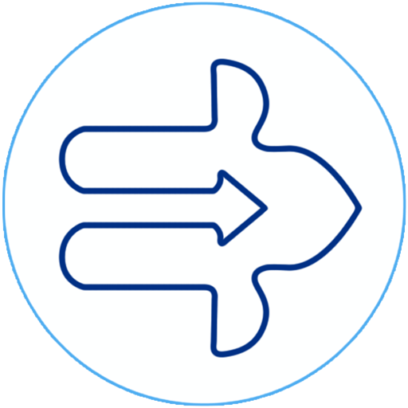

JustTravel
JustTravel
Home
About us
Contact us
Project Report
About Us
Launched in 2023, Just Travel is a technology company focused on empowering Indian travellers to plan,book and manage their trips across rail, air, buses and hotels. We assist travellers in making smarter travel decisions by leveraging artificial intelligence, machine learning, and data science led innovations on our OTA platforms, comprising our websites and mobile applications. Our vision is to become the most customer-centric travel company, by offering the best customer experience to our users. Our focus on travel utility and customer experience for travellers in the 'next billion user' segment is driven by technology, cost-efficiency and our culture of innovation has made us India's leading travel ecosystem for the 'next billion users'.
Top Travels
SRS Travels | Kallada Travels | KPN Travels | Orange Travels | Parveen Travels | Rajdhani Express | VRL Travels | Chartered Speed Bus | Bengal Tiger | SRM Travels | Infant Jesus | Patel Travels | JBT Travels | Shatabdi Travels | Eagle Travels | Kanker Roadways | Komitla | Sri Krishna Travels | Humsafar Travels | Mahasagar Travels | Raj Express | Sharma Travels | Shrinath Travels | Universal Travels | Verma Travels | Gujarat Travels | Madurai Radha Travels | Patel Tours and Travels | Paulo Travels | Royal Travels | Amarnath Travels | Vaibhav Travels | Ganesh Travels | Jabbar Travels | Jain Travels | Manish Travels | Pradhan Travels | YBM Travels | Hebron Transports | Mahalaxmi travels | MR Travels | Vivegam Travels | VST Travels | Jakhar Travels | Kaleswari Travels | Mahendra Travels | Neeta Tours and Travels | Yamani Travels | Arthi Travels |
Parterned RTC's
